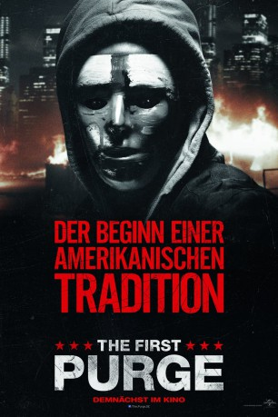

#9605 The First Purge
 gesehen am 19.09.2018
gesehen am 19.09.2018
 
 IMDB-Wertung: 5.1 / 10
IMDB-Wertung: 5.1 / 10  Metascore: 54
Metascore: 54 
In einer Nacht des Jahres wird in den USA die komplette Straffreiheit ausgerufen: Plünderungen, Gewalt und sogar Mord sind in diesen zwölf Stunden erlaubt, damit die Bevölkerung alle Aggressionen herauslassen kann. The First Purge zeigt, wie es dazu kam, dass die Bevölkerung der USA die sogenannte Purge Night in ihre Feiertagstraditionen integrierte. The First Purge nimmt als Idee einer Politikerin (Marisa Tomei) seinen Ausgangspunkt. Doch ist es wirklich die Absicht dieser brutalen Nacht, alle kriminellen Energien der US-Anwohner auf einmal zu entladen, um dann den Rest des Jahres Ruhe zu haben? Oder stecken doch noch andere Motive dahinter, die insbesondere die afroamerikanische Bevölkerung zu spüren bekommt?
WEBHDRIP DUBBED
Jahr: 2018
Dauer: 97 Minuten
FSK: 18
Land: USA Studio: Universal PicturesTonspuren: DD2.0 - ,
Untertitel:
Auflösung: 1080p (1920x802) Größe: 3645 MB
Genre: Action, Thriller, Horror, Sci-Fi
Regisseur: Gerard McMurray
Drehbuch: James DeMonaco
Soundtrack: Kevin Lax
Darsteller:
- Y'lan Noel als Dmitri
- Lex Scott Davis als Nya
- Joivan Wade als Isaiah
- Mugga als Dolores
 Patch Darragh als Chief of Staff - Arlo Sabian
Patch Darragh als Chief of Staff - Arlo Sabian Marisa Tomei als The Architect - Dr. Updale
Marisa Tomei als The Architect - Dr. Updale- Luna Lauren Velez als Luisa
- Kristen Solis als Selina
- Rotimi Paul als Skeletor
 Mo McRae als 7 & 7
Mo McRae als 7 & 7 Jermel Howard als Lorenzo
Jermel Howard als Lorenzo- Christian Robinson als Capital A
- Steve Harris als Freddy
- Derek Basco als Taz
- Mitchell Edwards als Kels
- Maria Rivera als Anna
 Chyna Layne als Elsa
Chyna Layne als Elsa Ian Blackman als Bracken - NFFA President
Ian Blackman als Bracken - NFFA President Melonie Diaz als Juani
Melonie Diaz als Juani- Olivia Frances Williams als Sister #2
- Matthew Mesler als Psychologist #1
- Geoff Schuppert als Psychologist #2
 Deidre Goodwin als Psychologist #3
Deidre Goodwin als Psychologist #3- Nancy Lemenager als Psychologist #4
- Neal Gupta als Tech #1
- Ricky Needham als Tech #2
- Anthony Lee Medina als Tech #3
- Mike Cabellon als Tech #4
 Levy Tran als Roenick
Levy Tran als Roenick- Paul Iatomasi als Security Guard
- Katina Forte als Reporter #1
- Van Jones als Reporter #2
 Jane Fergus als Reporter #4
Jane Fergus als Reporter #4 Alan Pietruszewski als Reporter #5
Alan Pietruszewski als Reporter #5- Aaron Moss als Reporter #6
 Logan Crawford als Reporter #7
Logan Crawford als Reporter #7 Moisés Acevedo als Crazy-Eyed Man
Moisés Acevedo als Crazy-Eyed Man- Patrick Byas als Bloody Victim
- Desiigner als Kels' Crew / Purge Partygoer
- Cloé Xhauflaire als News Reporter #1
- John P. McGinty als News Reporter #2
- Qurrat Ann Kadwani als News Reporter #3
- Jason John Beebe als Masked Purger (uncredited)
- Brittany Beek als Purge Supporter (uncredited)
- Jessica Bell als NYPD Officer Wilson (uncredited)
- Bob Bozek als Statistician (uncredited)
- Justin Clarke als Citizen 6 (uncredited)
- Christopher Fortin als Camera Man / Protester (uncredited)
- Katherine Fudge als Purge Supporter (uncredited)
- Emmanuel Kulu als Security Guard (uncredited)
Datei: X:\4-Tetralogie(M-Z)\Purge\First Purge, The (2018, FSK18, 1920x802).mkv seit 18.09.2018
Festplatte: HD Collection-3(N-Z)-6(A-Z)
 Es gibt insgesamt 7 Filme in der Gruppe '4-Tetralogie(M-Z)\Purge'
Es gibt insgesamt 7 Filme in der Gruppe '4-Tetralogie(M-Z)\Purge'